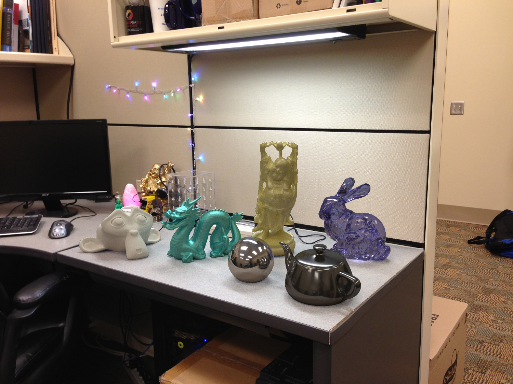

Adding virtual objects to real images
Overview
The goal of this project is to learn how to composite 3D models seamlessly into photographs using image-based lighting techniques.
HDR photography is the method of capturing photographs containing a greater dynamic range than what normal photographs contain (i.e. they store pixel values outside of the standard LDR range of 0-255 and contain higher precision). Most methods for creating HDR images involve the process of merging multiple LDR images at varying exposures. For outdoor scenes, parametric sun-sky models can be used instead (see the main paper for references).
HDR images are widely used by graphics and visual effects artists for a variety of applications, such as contrast enhancement, hyper-realistic art, post-process intensity adjustments, and image-based lighting. We will focus on their use in image-based lighting, specifically relighting virtual objects. One way to relight an object is to capture an 360 degree panoramic (omnidirectional) HDR photograph of a scene, which provides lighting information from all angles incident to the camera (hence the term image-based lighting). Capturing such an image is difficult with standard cameras, because it requires both panoramic image stitching and LDR to HDR conversion. An easier alternative is to capture a series of LDR photographs of a spherical mirror in different exposures, which provides the same omni-directional lighting information (up to some physical limitations dependent on sphere size and camera resolution).
In this tutorial, we will use a panoramic HDR image, with which we can relight 3D models and composite them seamlessly into photographs.
Rendering synthetic objects into photographs
We will use an HDR radiance map as an image-based light and insert 3D objects into the scene. This consists of 4 main parts:
- Estimating the camera and ground plane parameters;
- Adding and matching HDR lighting and virtual objects to the scene;
- Rendering;
- Compositing into the original background image.
Camera Estimation
The first step to object insertion is constructing a local scene that matches our background image (see Figure 6 in Debevec's 1998 differential rendering paper for more details). This can be done efficiently by identifying a ground plane of the background scene, onto which our virtual objects will be placed, together with the camera configuration that would view the plane from that specific viewpoint. If you are comfortable with 3D modeling in Blender, feel free to skip to the next section and manually model the 3D scene, positioning the camera aligned with the background image.
Otherwise, we can obtain the ground plane and camera efficiently with the open-source tool fSpy. After unzipping the program in your desired location, go ahead and open the background image using the top bar's File -> Open Image menu. You should see something like this:
Our goal here is to position the XY plane such that the Z axis points up. To do this, drag the line vertices to orthogonal positions (forming a projected rectangle) and position the ground mesh (by draggin the white center). You can also not utilize Rectangle mode and set the Vanishing point axes in a different configuration, if that's easier for your image. Usually, though, rectangle mode is enough.
To zoom-in on the pixels, hold SHIFT while dragging the vertices.
If you know the focal length of your camera (or it is available in the image's metadata), you can set it on the Focal length portion of the right-hand side. This will make your approximation more robust. Otherwise, a generic value will be used. The same applies to the camera's image plane center, which you can adjust manually using the Principal point setting or leave it as-is. Usually, setting it to the image's midpoint is a good-enough approximation (unless you have already calibrated your camera's intrinsic parameters).
The whole concept behind fSpy is to utilize parallel lines (manually set by you on top of the ground plane) to approximate the world's horizon, or, in other words, the ground plane's vanishing line. If we assume the ground plane is located at the world's 3D origin with no additional rotation, we can instead interpret the position of the horizon to be an indication of the camera's position. For more details on obtaining camera parameters through projective geometry, check out Hartley and Zisserman's seminal book.
Make sure to provide the largest rectangle you can confidently annotate. Otherwise, small pixel differences may provide very degenerated planes.
Once you're happy with your plane, select the topbar's File -> Save As to store your annotation. Make sure to
utilize the .fspy extension in the filename.
Modeling the local scene
Begin by downloading/installing Blender (for the Shadow Harmonization for Realistic Compositing paper, v3.0.1 is used). This tutorial provides a v3.3 LTS Blender file. Also download fSpy's Blender plug-in here. Installation instructions for the plug-in are available on the README of the repository.
In the example materials package, locate the blend file and open it. This is the blend file used to create the result at the top of the page. The instructions below assume you will modify this file to create your own composite result, but feel free to create your own blend file from scratch if you are comfortable with Blender.
At first glance, the Blender scene should look something like this:

Clockwise from the top-left, we have 6 main views: the viewport, outliner, properties, world shader editor, and compositor (for render passes). We'll go through them in a bit more detail soon.
Assuming you have the fSpy plug-in installed, the camera can be imported through the top bar's File -> Import -> fSpy. Make sure to delete the existing camera when you add yours. To view the scene from the camera's viewpoint, click on the camera view icon above. Now is also a good time to import the background image in the compositor (see the image above).
You may notice the background image in the viewport is slightly transparent:
To fix this, select your fSpy camera, then go to the camera settings (see the image above), look for the Background images section and set the Opacity slider to 100%.
Next, you need to add your HDR lighting. To do this, go to the world settings as follows:
Note: this is not the outdoor lighting estimation step described in the shadow harmonization repository, but instead a simplified tutorial utilizing traditional methods. For sun-sky parametric estimation, please refer to the compositing README and the other provided Blender project file. Nonetheless, the HDR environment maps output by parametric sky models can be utilized as described below.
Following the image's directions, select your HDR file, then adjust the strength in case the light is too strong or weak. It might also be necessary to rotate your HDR image around the origin using the sliders indicated on the first Blender image above. A good trick is to utilize a mirror sphere in your scene, like the one in the provided file, and adjust your HDR rotation by the reflections on it, as seen from the camera's viewpoint. Another useful guideline is the direction of the cast shadows: do they look coherent?
Next, you need to add your own objects. Meshes can be imported on the same File -> Import menu and will appear listed on the outliner. After adding an object, you must adjust its scale, translation, and rotation, so it looks right on top of the ground plane:
It is also very important to remember to change the Pass Index of every new object to 1, as indicated above, otherwise they won't show up in the compositor's binary mask.
A good tip to help positioning your objects is to select the Plane object, go to its settings like shown above, then look for the Visibility section. There, enable Shadow Catcher. Then, go to the Render Properties (gray camera icon, above the world settings on the properties menu). There, look for Film and select Transparent. This will make your plane transparent but the object shadows and highlights will remain visible, giving you a preview of what the composite would look like. Remember to disable the shadow catcher when you are done positioning your objects, though, otherwise Debevec's equation won't work! Also remember to disable the transparent film, otherwise you will get alpha blending issues in your composites.
Finally, you need to change the color of your plane (very important for reflective objects) to match the background image. You also need to change how specular the plane surface should be (i.e., how "shiny" and reflective it should be). This can be done using the roughness slider, as shown below:
The shadow catcher feature is also very useful here, to make sure the reflections match the surface material in the background (e.g., a concrete floor should not reflect like a polished wooden table).
Rendering
Note: this is not the rendering step of the shadow harmonization paper, but instead a simplified tutorial utilizing traditional methods.
Once you're happy with your scene, go to the top bar and select Render -> Render Image. After the rendering is done (can take a while, depending on the resolution of your image) the four images needed for compositing will be saved in the same folder as your blend file.
Compositing
Note: this is not the compositing step of the shadow harmonization paper, but instead a simplified tutorial utilizing traditional methods.
To finish the insertion, we will use the above rendered images to perform "differential render" compositing. This can be done using a simple pixel-wise equation. Let $R$ be the rendered image with objects, $E$ be the rendered image without objects, $M$ be the object mask, and $I$ be the background image. The final composite is computed with:
\[ C = M R + (1-M)(I + c(R-E)) \,. \]This equation is described in sec. 6 of the 1998 Debevec paper (except for the scalar c). The first two terms effectively paste the inserted objects into the background image, and the third term adds the lighting effects of the inserted objects (shadows, caustics, interreflected light, etc), modulated by $c$. Set $c=1$ initially, but try different values to get darker or lighter shadows/interreflections. You can implement this step in Python. An example of a final compositing result achieved using this is at the top of the page.
Tips
- Save your Blender file regularly!
- To move more than one object at once, select multiple objects using shift. Pressing 'a' deselects all objects/vertices.
- You can edit vertices directly in "Edit mode" (tab toggles between Object and Edit modes).
- Due to convention, the camera should always be pointed such that the +z axis is up, make sure to check your fSpy preview!
Thanks
Many thanks to Derek Hoiem and Kevin Karsch for creating the assignment which inspired this one!